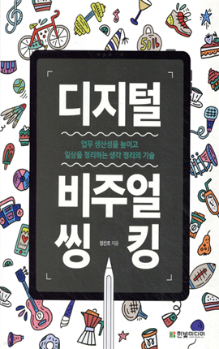

학습 목표
- 1. 복잡한 정보를 정리하는 과정에서 새로운 아이디어와 영감을 얻을 수 있다.
- 2. 서로 다른 전문 영역의 지식을 결합하여 많은 사람들이 쉽게 이해할 수 있도록 공유할 수 있다.
교육 특징
-
1. 기초부터 차근차근 누구나 쉽게 따라하는 비주얼씽킹!
미술이나 디자인에 대한 아무런 경험과 기초 지식이 없더라도 강의를 따라가다 보면 어느새 ‘그럴싸한’ 그림을 그리는 방법을 익히고 글과 그림으로 생각을 효과적으로 정리하게 되는 나를 발견
-
2. 직접 제작한 드로잉 자료와 실시간 스케치 장면 구성
넓은 여백을 활용하여 가시성 높은 드로잉 자료를 제공하여 한눈에 들어오는 화면 구성과 효과적인 학습내용 이해를 위한 실시간 스케치 장면 제공
-
3. 드로잉 타임 랩스를 활용한 학습 내용 복기
차시별 핵심 내용을 비주얼씽킹과 마인드맵으로 제작하여 타임 랩스로 제공
교육 대상
- 1. 마케터, 기획자 등 효과적인 생각 정리를 원하는 직장인
- 2. 수업을 즐겁고 흥미롭게 만들고 싶은 교사 및 강사
- 3. 배운 것을 그림으로 정리하고 싶은 학생
- 4. 자신의 생각을 빠르고 창의적으로 정리하고 싶어 하는 사람
강의 목차
- 제1장 일잘러는 전뇌형 인재
- 제2장 비주얼씽킹 시작하기
- 제3장 비주얼씽킹 응용하기
- 제4장 업무 활용하기
- 제5장 마인드맵 이해하기
- 제6장 디지털 마인드맵 시작하기
- 제7장 Xmind 응용하기
- 제8장 Xmind 고급 활용
강사 소개
강사명
정진호
경력
前 SK커뮤니케이션즈에서는 기업문화팀
現 J비주얼스쿨 대표
비주얼 씽킹 & 그래픽 레코딩 전문가
Buzan 공인 마인드맵 지도사
저서）디지털 비주얼씽킹 - 2022.12
저서）비주얼씽킹 - 2015.06
現 J비주얼스쿨 대표
비주얼 씽킹 & 그래픽 레코딩 전문가
Buzan 공인 마인드맵 지도사
저서）디지털 비주얼씽킹 - 2022.12
저서）비주얼씽킹 - 2015.06
참고 도서

도서명
디지털 비주얼 씽킹
저자명
정진호
도서소개
비주얼씽킹은 글과 그림으로 생각을 빠르고 간단하게 정리하고 정보를 요약하는 기술입니다. 아이디어와 영감을
얻고 복잡한 정보를 쉽게 이해하며 업무 생산성을 높이는 데 핵심적입니다. 무료 앱 '스케치북'을 활용하여 지금 바로 창의적 문제 해결 능력을
키워보세요.